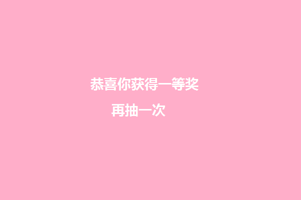

<!DOCTYPE html>
<html lang="en">
<head>
    <meta charset="UTF-8">
    <title>Title</title>
    <style>
        body{
            margin: 0;
            padding: 0;
        }
        canvas {
            border: 1px solid #ccc;
        }
    </style>
</head>
<body>
<canvas width="600" height="400"></canvas>
<!---->
<script>
    var canvas = document.querySelector('canvas');
    var ctx = canvas.getContext('2d');

    /*图片加载到内存*/
    var image = new Image();
    /*图片加载完成之后*/
    image.onload = function () {
        /*cnavas 就可以使用*/
        /*strokeStyle fillStyle*/
        /* 颜色 线性渐变 图片 */
        var imageStyle = ctx.createPattern(image,'no-repeat');
        /*
        ctx.fillStyle = imageStyle;
        ctx.rect(100,100,200,200);
        ctx.fill();*/
        /*跟着鼠标绘制就可以了  */
        ctx.strokeStyle = imageStyle;
        ctx.lineWidth = 20;
        ctx.lineCap = 'round';
        ctx.lineJoin = 'round';
        ctx.stroke();

        /*判断鼠标是否摁下的标识*/
        var isMouseDown = false;
        ctx.canvas.addEventListener('mousedown',function (e) {
            /*按下去开始设置起始点*/
            ctx.moveTo(e.pageX,e.pageY)
            /*保持按下去的状态*/
            isMouseDown = true;
        });
        ctx.canvas.addEventListener('mousemove',function (e) {
            /*如果按了采取操作*/
            if(isMouseDown){
                ctx.lineTo(e.pageX,e.pageY);
                ctx.lineCap = 'round';
                ctx.stroke();
            }
        });
        ctx.canvas.addEventListener('mouseup',function (e) {
            /*按下鼠标起来的时候  重置回到没有按的状态*/
            isMouseDown = false;
        });
    }
    image.src = 'ggl.jpg';

</script>
</body>
</html>